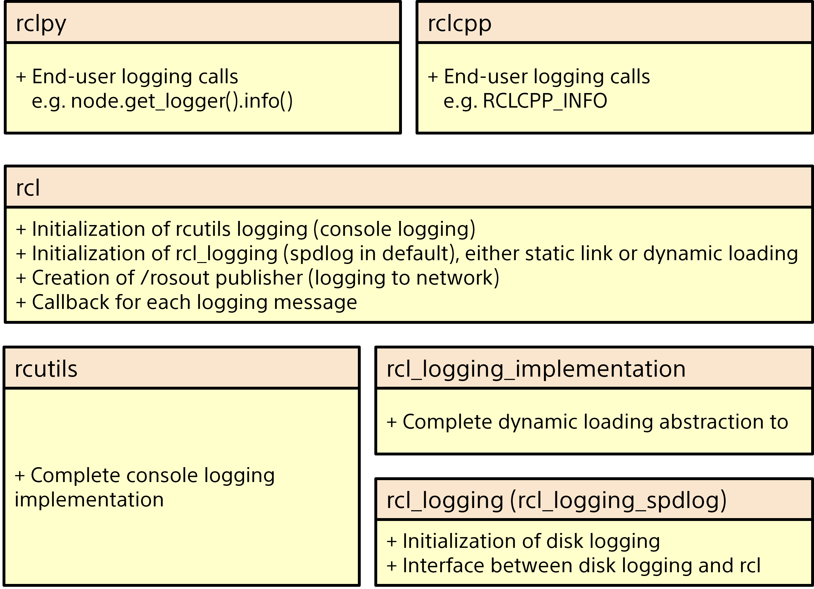
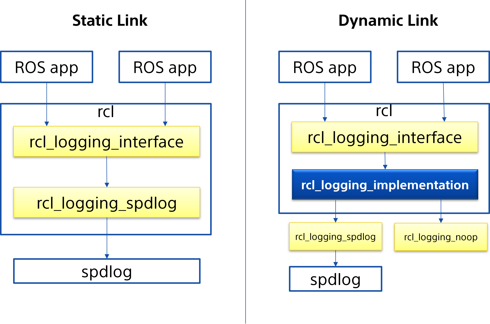

Note
You're reading the documentation for a development version. For the latest released version, please have a look at Lyrical.
Logging
ROS logging helps you monitor node behavior and diagnose problems by sending logs to console output, log files, and the /rosout topic.
This article describes the available logging severities, APIs, configuration options, environment, and implementations.
Logging and logger configuration
The logging subsystem in ROS 2 aims to deliver logging messages to a variety of targets, including:
To the console (if one is attached)
To log files on disk (if local storage is available)
To the
/rosouttopic on the ROS 2 network
By default, log messages in ROS 2 nodes will go out to the console (on stderr), to log files on disk, and to the /rosout topic on the ROS 2 network.
All of the targets can be individually enabled or disabled on a per-node basis.
The rest of this document will go over some of the ideas behind the logging subsystem.
Severity level
Log messages have a severity level associated with them: DEBUG, INFO, WARN, ERROR or FATAL, in ascending order.
A logger will only process log messages with severity at or higher than a specified level chosen for the logger.
Each node has a logger associated with it that automatically includes the node’s name and namespace. If the node’s name is externally remapped to something other than what is defined in the source code, it will be reflected in the logger name. Non-node loggers can also be created that use a specific name.
Logger names represent a hierarchy. If the level of a logger named “abc.def” is unset, it will defer to the level of its parent named “abc”, and if that level is also unset, the default logger level will be used. When the level of logger “abc” is changed, all of its descendants (e.g. “abc.def”, “abc.ghi.jkl”) will have their level impacted unless their level has been explicitly set.
APIs
These are the APIs that end users of the ROS 2 logging infrastructure should use, split up by client library.
RCLCPP_{DEBUG,INFO,WARN,ERROR,FATAL}- output the given printf-style message every time this line is hitRCLCPP_{DEBUG,INFO,WARN,ERROR,FATAL}_ONCE- output the given printf-style message only the first time this line is hitRCLCPP_{DEBUG,INFO,WARN,ERROR,FATAL}_EXPRESSION- output the given printf-style message only if the given expression is trueRCLCPP_{DEBUG,INFO,WARN,ERROR,FATAL}_FUNCTION- output the given printf-style message only if the given function returns trueRCLCPP_{DEBUG,INFO,WARN,ERROR,FATAL}_SKIPFIRST- output the given printf-style message all but the first time this line is hitRCLCPP_{DEBUG,INFO,WARN,ERROR,FATAL}_THROTTLE- output the given printf-style message no more than the given rate in integer millisecondsRCLCPP_{DEBUG,INFO,WARN,ERROR,FATAL}_SKIPFIRST_THROTTLE- output the given printf-style message no more than the given rate in integer milliseconds, but skip the firstRCLCPP_{DEBUG,INFO,WARN,ERROR,FATAL}_STREAM- output the given C++ stream-style message every time this line is hitRCLCPP_{DEBUG,INFO,WARN,ERROR,FATAL}_STREAM_ONCE- output the given C++ stream-style message only the first time this line is hitRCLCPP_{DEBUG,INFO,WARN,ERROR,FATAL}_STREAM_EXPRESSION- output the given C++ stream-style message only if the given expression is trueRCLCPP_{DEBUG,INFO,WARN,ERROR,FATAL}_STREAM_FUNCTION- output the given C++ stream-style message only if the given function returns trueRCLCPP_{DEBUG,INFO,WARN,ERROR,FATAL}_STREAM_SKIPFIRST- output the given C++ stream-style message all but the first time this line is hitRCLCPP_{DEBUG,INFO,WARN,ERROR,FATAL}_STREAM_THROTTLE- output the given C++ stream-style message no more than the given rate in integer millisecondsRCLCPP_{DEBUG,INFO,WARN,ERROR,FATAL}_STREAM_SKIPFIRST_THROTTLE- output the given C++ stream-style message no more than the given rate in integer milliseconds, but skip the first
Each of the above APIs takes an rclcpp::Logger object as the first argument.
This can be pulled from the node API by calling node->get_logger() (recommended), or by constructing a stand-alone rclcpp::Logger object.
rcutils_logging_set_logger_level- Set the logging level for a particular logger name to the given severity levelrcutils_logging_get_logger_effective_level- Given a logger name, return the logger level (which may be unset)
logger.{debug,info,warning,error,fatal}- output the given Python string to the logging infrastructure. The calls accept the following keyword args to control behavior:throttle_duration_sec- if not None, the duration of the throttle interval in floating-point secondsskip_first- if True, output the message all but the first time this line is hitonce- if True, only output the message the first time this line is hit
rclpy.logging.set_logger_level- Set the logging level for a particular logger name to the given severity levelrclpy.logging.get_logger_effective_level- Given a logger name, return the logger level (which may be unset)
Configuration
Since rclcpp and rclpy use the same underlying logging infrastructure, the configuration options are the same.
Environment variables
The following environment variables control some aspects of the ROS 2 loggers. For each of the environment settings, note that this is a process-wide setting, so it applies to all nodes in that process.
RCL_LOGGING_IMPLEMENTATION- Control which logging backend implementation to use at runtime (when using dynamic loading, which is the default). If non-empty, use the specified logging implementation library (e.g.,rcl_logging_spdlog,rcl_logging_noop). If empty or not set, defaults torcl_logging_spdlog. This variable has no effect when RCL is built with static linking to a specific logging implementation. See thercl_logging_implementationsection below for more details.RCL_LOGGING_SPDLOG_FLUSH_PERIOD_SECONDS- Control the periodic flush interval for log files when using thercl_logging_spdlogbackend. By default, logs are flushed every 5 seconds and immediately on error-level messages. If set to0, logs are flushed immediately on every log message (unbuffered mode, which may impact performance). If set to a positive integerN, logs are flushed everyNseconds plus immediately on error-level messages. If set to an invalid value (non-integer, negative, or trailing characters), initialization will fail with an error.ROS_LOG_DIR- Control the logging directory that is used for writing logging messages to disk (if that is enabled). If non-empty, use the exact directory as specified in this variable. If empty, use the contents of theROS_HOMEenvironment variable to construct a path of the form$ROS_HOME/.log. In all cases, the~character is expanded to the user’s HOME directory.ROS_HOME- Control the home directory that is used for various ROS files, including logging and config files. In the context of logging, this variable is used to construct a path to a directory for log files. If non-empty, use the contents of this variable for the ROS_HOME path. In all cases, the~character is expanded to the users’s HOME directory.RCUTILS_LOGGING_USE_STDOUT- Control what stream output messages go to. If this is unset or 0, use stderr. If this is 1, use stdout.RCUTILS_LOGGING_BUFFERED_STREAM- Control whether the logging stream (as configured inRCUTILS_LOGGING_USE_STDOUT) should be line buffered or unbuffered. If this is unset, use the default of the stream (generally line buffered for stdout, and unbuffered for stderr). If this is 0, force the stream to be unbuffered. If this is 1, force the stream to be line buffered.RCUTILS_COLORIZED_OUTPUT- Control whether colors are used when outputting messages. If unset, automatically determine based on the platform and whether the console is a TTY. If 0, force disable using colors for output. If 1, force enable using colors for output.RCUTILS_CONSOLE_OUTPUT_FORMAT- Control the fields that are output for each log message. The available fields are:{severity}- The severity level.{name}- The name of the logger (may be empty).{message}- The log message (may be empty).{function_name}- The function name this was called from (may be empty).{file_name}- The file name this was called from (may be empty).{short_file_name}- The file name without the directory path (basename only) this was called from (may be empty).{time}- The time in seconds since the epoch.{time_as_nanoseconds}- The time in nanoseconds since the epoch.{date_time_with_ms}- The time in ISO format, e.g.2024-06-11 09:29:19.304{line_number}- The line number this was called from (may be empty).
If no format is given, a default of
[{severity}] [{time}] [{name}]: {message}is used.
RCUTILS_CONSOLE_OUTPUT_FORMAT also supports the following escape character syntax.
Escape character syntax |
Character represented |
|---|---|
|
Alert |
|
Backspace |
|
New line |
|
Carriage return |
|
Horizontal tab |
Node creation
When initializing a ROS 2 node, it is possible to control some aspects of the behavior via node options. Since these are per-node options, they can be set differently for different nodes even when the nodes are composed into a single process.
log_levels- The log level to use for a component within this particular node. This can be set with the following:ros2 run demo_nodes_cpp talker --ros-args --log-level talker:=DEBUGexternal_log_config_file- The external file to use to configure the backend logger. If it is NULL, the default configuration will be used. Note that the format of this file is backend-specific (and is currently unimplemented for the default backend logger of spdlog). This can be set with the following:ros2 run demo_nodes_cpp talker --ros-args --log-config-file log-config.txtlog_stdout_disabled- Whether to disable writing log messages to the console. This can be done with the following:ros2 run demo_nodes_cpp talker --ros-args --disable-stdout-logslog_rosout_disabled- Whether to disable writing log messages out to/rosout. This can significantly save on network bandwidth, but external observers will not be able to monitor logging. This can be done with the following:ros2 run demo_nodes_cpp talker --ros-args --disable-rosout-logslog_ext_lib_disabled- Whether to completely disable the use of an external logger. This may be faster in some cases, but means that logs will not be written to disk. This can be done with the following:ros2 run demo_nodes_cpp talker --ros-args --disable-external-lib-logs
Logging subsystem design
The image below shows the main pieces to the logging subsystem and how they interact.
Note that rcl can link to logging implementations either through the rcl_logging_implementation abstraction layer (for runtime dynamic loading, the default) or directly to a specific implementation like rcl_logging_spdlog (for static linking).


rcutils
rcutils has a logging implementation that can format log messages according to a certain format (see Configuration above), and output those log messages to a console.
rcutils implements a complete logging solution, but allows higher-level components to insert themselves into the logging infrastructure in a dependency-injection model.
This will become more evident when we talk about the rcl layer below.
Note that this is a per-process logging implementation, so anything that is configured at this level will affect the entire process, not just individual nodes.
rcl_logging_implementation
rcl_logging_implementation is a package that enables runtime dynamic loading of logging backends in ROS 2, similar to how rmw_implementation works for middleware selection.
This abstraction layer allows users to switch between different logging implementations (such as rcl_logging_spdlog and rcl_logging_noop) without rebuilding RCL or application code.


Runtime Dynamic Loading vs Static Linking
The logging system supports two build configurations:
Dynamic Loading (Default)
By default, rcl links against rcl_logging_implementation, which dynamically loads the logging backend at runtime.
This approach provides maximum flexibility, allowing the logging implementation to be changed via environment variables without recompilation.
When using dynamic loading:
The logging implementation is loaded as a shared library at runtime
The actual implementation can be selected via the
RCL_LOGGING_IMPLEMENTATIONenvironment variableNo rebuild is required to switch between logging implementations
All logging interface function symbols are resolved lazily when first accessed
Static Linking
For embedded systems or deployment scenarios requiring static linking, the build system can be configured to link directly to a specific logging implementation:
Set the CMake variable
RCL_LOGGING_IMPLEMENTATIONat build time to specify the implementation (e.g.,rcl_logging_spdlog,rcl_logging_noop)Alternatively, set the
RCL_LOGGING_IMPLEMENTATIONenvironment variable before running CMakeThe specified implementation will be statically linked into the final executable
Runtime switching is NOT available with static linking
Environment Variable Configuration
When using dynamic loading (the default), the RCL_LOGGING_IMPLEMENTATION environment variable controls which logging backend is loaded at runtime.
Syntax
export RCL_LOGGING_IMPLEMENTATION=<implementation_name>
export RCL_LOGGING_IMPLEMENTATION=<implementation_name>
set RCL_LOGGING_IMPLEMENTATION=<implementation_name>
Available implementations
rcl_logging_spdlog- Full-featured logging using the spdlog library (default)rcl_logging_noop- No-op implementation that discards all log messages (useful for performance-critical applications)
Example usage
# Use spdlog for logging (default behavior)
export RCL_LOGGING_IMPLEMENTATION=rcl_logging_spdlog
ros2 run demo_nodes_cpp talker
# Use no-op logging implementation that discards all log messages to the logging backend
export RCL_LOGGING_IMPLEMENTATION=rcl_logging_noop
ros2 run demo_nodes_cpp talker
# Use spdlog for logging (default behavior)
export RCL_LOGGING_IMPLEMENTATION=rcl_logging_spdlog
ros2 run demo_nodes_cpp talker
# Use no-op logging implementation that discards all log messages to the logging backend
export RCL_LOGGING_IMPLEMENTATION=rcl_logging_noop
ros2 run demo_nodes_cpp talker
# Use spdlog for logging (default behavior)
set RCL_LOGGING_IMPLEMENTATION=rcl_logging_spdlog
ros2 run demo_nodes_cpp talker
# Use no-op logging implementation that discards all log messages to the logging backend
set RCL_LOGGING_IMPLEMENTATION=rcl_logging_noop
ros2 run demo_nodes_cpp talker
If the environment variable is not set, the system defaults to rcl_logging_spdlog.
Implementation Details
The rcl_logging_implementation package:
Uses
rcpputils::SharedLibraryfor cross-platform dynamic library loadingLoads all logging interface function symbols at initialization
Maintains symbol references until the process exits
Falls back to the default implementation if the requested implementation cannot be found
Provides the same API surface as the underlying implementations, ensuring transparency to client code
This architecture allows system integrators to:
Select appropriate logging implementations for different deployment scenarios
Disable logging in production for improved performance without code changes
Switch logging backends for debugging or development purposes
Package different logging implementations and select them at runtime
rcl_logging_spdlog
rcl_logging_spdlog implements the rcl_logging_interface API, and thus provides external logging services to the rcl layer.
In particular, the rcl_logging_spdlog implementation takes formatted log messages and writes them out to log files on disk using the spdlog library, typically within ~/.ros/log (though this is configurable; see Configuration above).
rcl
The logging subsystem in rcl uses rcutils and rcl_logging_spdlog to provide the bulk of the ROS 2 logging services.
When log messages come in, rcl decides where to send them.
There are 3 main places that logging messages can be delivered; an individual node may have any combination of them enabled:
To the console via the
rcutilslayerTo disk via the
rcl_logging_spdloglayerTo the
/rosouttopic on the ROS 2 network via the RMW layer
rclcpp
This is the main ROS 2 C++ API which sits atop the rcl API.
In the context of logging, rclcpp provides the RCLCPP_ logging macros; see APIs above for a complete list.
When one of the RCLCPP_ macros runs, it checks the current severity level of the node against the severity level of the macro.
If the severity level of the macro is greater than or equal to the node severity level, the message will be formatted and output to all of the places that are currently configured.
Note that rclcpp uses a global mutex for log calls, so all logging calls within the same process end up being single-threaded.
rclpy
This is the main ROS 2 Python API which sits atop the rcl API.
In the context of logging, rclpy provides the logger.debug-style functions; see APIs above for a complete list.
When one of the logger.debug functions runs, it checks the current severity level of the node against the severity level of the macro.
If the severity level of the macro is greater than or equal to the node severity level, the message will be formatted and output to all of the places that are currently configured.
Logging usage
See the rclcpp logging demo for some simple examples.
See the logging demo for example usage.
See the rclpy examples for example usage of a node’s logger.
See the rclpy tests for example usage of keyword arguments (e.g.
skip_first,once).